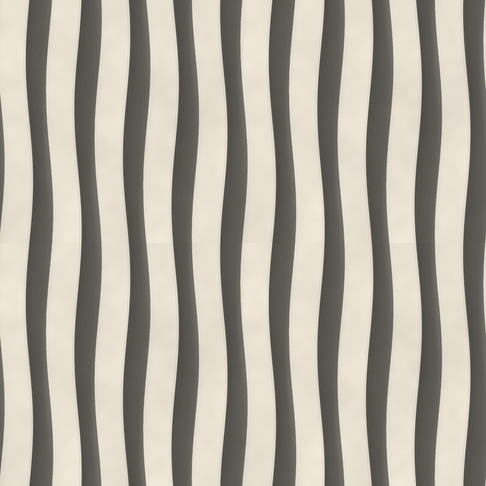
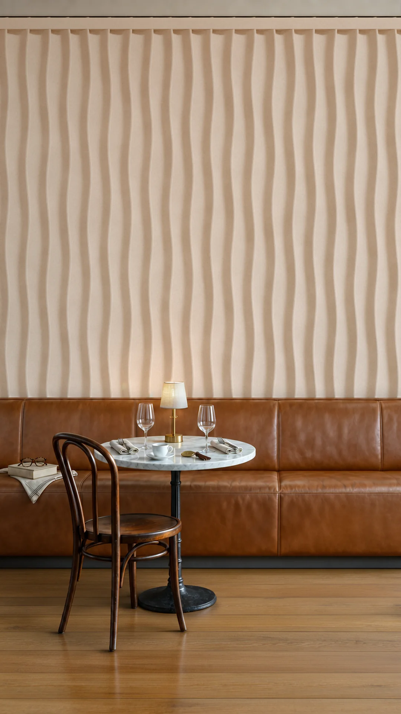
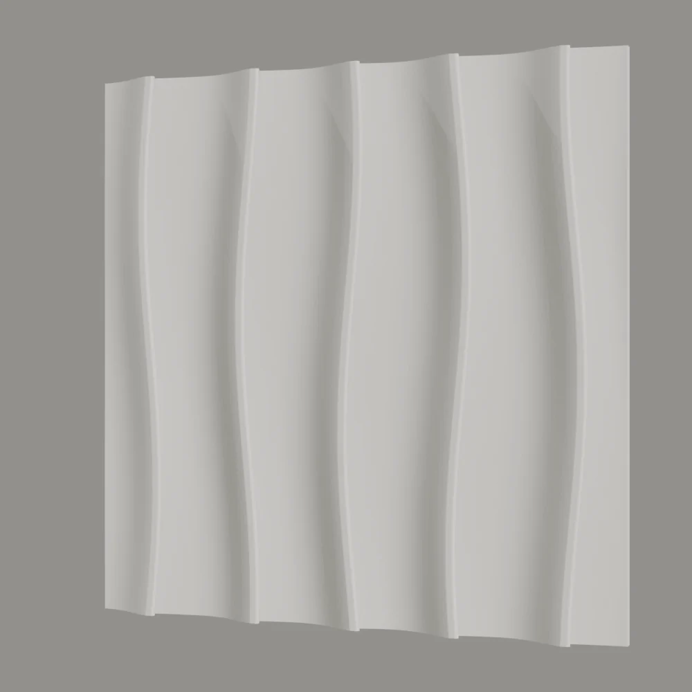
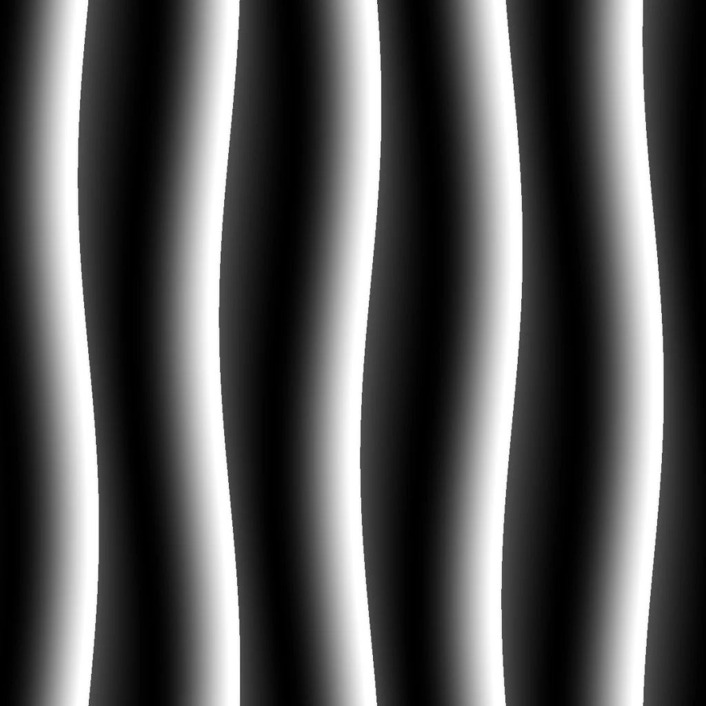

Sonado
Her panelde beş pile var. Pileler yüzeyden yavaşça yükselip keskin bir kenarla bitiyor, yukarı doğru hafifçe sağa sola salınıyor. 600 × 600 mm’lik paneller kenar kenara dizildiğinde pileler bir panelden ötekine kesintisiz sürüyor.



- Ölçü
- 600 × 600 mm
- Rölyef
- 24 mm
- Kurgu
- Tek kalıp, düz ızgara
- Malzeme
- Lumina PMAG™ (polimer modifiye kompozit alçı)
- Yüzey
- Boyaya hazır ya da artizan finish ile
- Montaj
- Polimer yapıştırıcıyla
- Teslim
- Sözleşme ve peşinattan sonra 4 hafta (50 m²’ye kadar), Sapanca’da fabrika teslimi (EXW)
- Minimum sipariş
- 5 m²
Desen
Sonado’nun her panelinde beş pile bulunur. Pile yüzeyden yavaş bir eğimle yükselir, 24 mm’ye ulaştığı yerde keskin bir kenarla biter; bir sonraki pile bu kenarın dibinden yeniden başlar. Pileler düz değildir. Panelin yüksekliği boyunca her biri iki yana 20 mm’ye kadar salınır, aralarındaki mesafe de 110 ile 130 mm arasında değişir.
Pile kenarları hafifçe öne taşar ve her kenarın altında dar bir boşluk kalır. Bu biçimi dökülebilir kılan esnek silikon kalıptır; rijit bir kalıp bu kenara takılırdı.
Işıkta okunuşu
Sayfanın başındaki görüntü, bu tasarımın derinlik haritasından hesaplanan bir render’dır; ışığı bilgisayarda imleciniz, telefonda sayfayı kaydırmanız yönlendirir. Işık yandan geldiğinde her pile kenarı uzun, dalgalı bir gölge düşürür ve duvar dikey gölge çizgileriyle okunur. Işık dikleştikçe gölgeler daralır, pilelerin yumuşak eğimi öne çıkar. Derinlik haritası kenarların altındaki boşluğu kaydedemez; parçanın gerçek biçimini sayfadaki eğik görünüş gösterir.
Duvarda
Sonado 600 × 600 mm’lik kare panellerle, kaydırma olmadan düz bir ızgarada kurulur. Panel kenarları birbirine uyacak şekilde çizildiği için her pile komşu panelde kaldığı yerden devam eder ve duvar tek bir yüzey olarak okunur. Tavana ya da duvarın ucuna denk gelen son sıra yerinde kesilir; kesimlerin yeri yerleşim çiziminde belirlenir.

Nerede kullanılır
Sonado, ışığı yandan alan bir duvarda en güçlü okunur: her pile kenarı dalgalı bir gölge çizgisi düşürür ve duvar boyunca dikey bir ritim kurulur. Sayfadaki render tasarımı bir kafede, deri bir banketin arkasındaki duvarda gösterir. Pileler salındığı için panel sınırları kolay seçilmez; geniş bir duvarda yüzey tek parça, kıvrımlı bir düzlem gibi görünür. Restoran ve kafe duvarlarında bakış mesafesini ve ışığı restoran duvar tasarımı rehberi ayrıca ele alır. Parçalar boyaya hazır ya da artizan finish ile teslim edilir; boyaya hazır yüzey, yerinde mekânın rengine boyanabilir.
Sık sorulan sorular
Sonado panellerinin ölçüsü nedir, nasıl dizilir?
Sonado 600 × 600 mm ölçüsünde kare bir rölyef duvar paneli olarak tasarlanmıştır; paneller kenar kenara, kaydırma olmadan düz bir ızgarada dizilir. Kenarlar birbirine uyduğu için pileler panelden panele kesintisiz sürer. Duvarın kenarlarında kalan kesimler yerleşim çiziminde çözülür.
Sonado’nun rölyefi ne kadar derin?
Pileler 24 mm’ye kadar yükselir ve bu yükseklikte keskin bir kenarla biter. Kenarlar hafifçe öne taşar; esnek silikon kalıp sayesinde bu taşma dökümde de korunur.
Sonado ne kadar sürede teslim edilir, duvara nasıl sabitlenir?
Teslim süresi, 50 m²’ye kadar olan siparişlerde sözleşme ve peşinattan sonra 4 haftadır; daha büyük siparişlerde tarih teklifte belirtilir. Teslim şekli Sapanca’da fabrika teslimidir (EXW). Parçalar Lumina PMAG™ — Polimer Modifiye Kompozit Alçı ile elde dökülür ve duvara polimer yapıştırıcıyla, metal dikme ve alçıpan duvarlarda ise ray sistemiyle sabitlenir. Bir kolonu saran, köşeyi dönen ya da kavisli bir duvarı izleyen parçalar ise aynı motifle Özel Üretim olarak dökülür; böyle bir duvar Özel Üretim takvimini izler. Minimum sipariş 5 m²’dir. Kalıp siparişinizle hazırlanır; dökümden önce ana modeli siz onaylarsınız; ikisi de 4 haftaya dahildir.
Bu tasarımın duvarınızda nasıl yerleşeceğini görmek için duvar ölçülerinizi iletin.
Kolon yüzleri ve dış köşeler yerleşim çiziminde çözülür. Bir kolonu saran, köşeyi dönen ya da kavisli bir duvarı izleyen parçalar, aynı motifle Özel Üretim olarak dökülür.